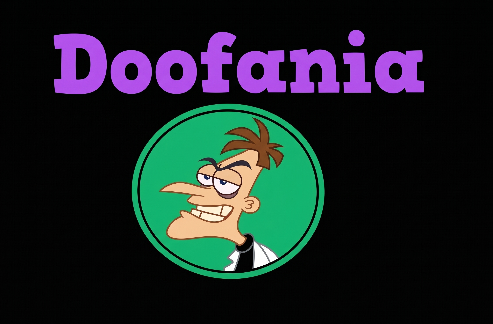

Historia:
La ciudad fue fundada en 2015 por el doctor doofenshmirtz para que pudiera vivir lejos de su hermano y ex-esposa
Desde su fundación, la ciudad se convirtio en un centro turistico e industrial que flota en la costa de los estado unidos

La ciudad fue fundada en 2015 por el doctor doofenshmirtz para que pudiera vivir lejos de su hermano y ex-esposa
Desde su fundación, la ciudad se convirtio en un centro turistico e industrial que flota en la costa de los estado unidos
la ciudad es identificada por su ser un logro de ingeneria que atrajo a los mejores habitantes en las ciencias y las artes
la ciudad es pricipalmente por ser estructuralmente estable a pesar de estar flotando en el mar
sumado a esto, a desarrollado un enorme instituto cientifico, intdustrial y artístico
donde la ciuddad se desarrollo y donde se encuentran la mayoria de las fabricas
donde cientificos de todas partes del mundo vienen a crecer sus conocimientos
Donde turistas de todo el mundo vienen a disfrutar de sus instalaciones
hay dos principales costumbres en la ciudad: la celebración del "Día de la Ciencia" y un tradicion llamada "remembransa del camino"
En el dia de la ciencia, cientificos de adentro y afuera de la ciudad hacen una expocicion de sus invenciones
Los que imprecionen mas seran recompenzados por sus ingenio y esfuerzo
la tradicion que la ciudad tiene, consiste que cuando un cientifico muestra una invencion en la que hayan trabajado. De que tiene invertir una seccion siginificativa de tiempo en hacer rememoriar las tecnologias que que conllevaron al desarrollo de la invencion que esta mostrando